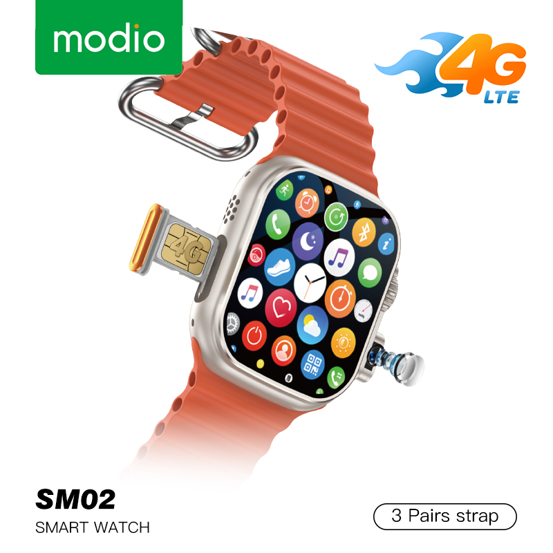

The luther X tablet is a great device for both work and entertainment. It has a large, high-quality display that's perfect for watching videos and reading. The performance is solid, handling multitasking without any issues. Battery life is decent, lasting most of the day with moderate use.
luther X Phone
ksh 15000
★★★★★
customer reviews
Fast and reliable with an amazing display. Battery easily lasts all day, even with heavy use.
I’ve been using the luther X phone for a few weeks now, and it has easily exceeded my expectations. The display is bright, sharp, and very responsive, making it great for streaming videos and browsing. Performance is smooth even when multitasking, and apps open quickly without lag.
Battery life is one of the biggest highlights for me — it comfortably lasts a full day with heavy use. The camera produces clear photos in both daylight and low-light conditions, which is impressive for this price range. Overall, it feels like a premium phone without the premium price tag.

luther X Watch
ksh 6990
★★★★★
customer reviews
I've been using the luther X smartwatch for a month now, and it's been a fantastic experience. The design is sleek and comfortable to wear all day. The display is vibrant and easy to read, even in bright sunlight.The Smartwatch Pro has been a great addition to my daily routine. Setup was quick and straightforward, and it paired instantly with my phone. Fitness tracking is accurate, and I especially like the heart-rate monitoring and step tracking features.
The design is sleek and lightweight, making it comfortable to wear all day. Notifications come through clearly, and the battery lasts several days before needing a recharge. While there are more advanced smartwatches out there, this one offers great value for the price.
luther X airpods
ksh 699
★★★★★
customer reviews
These headphones are excellent for both work and travel. The sound quality is rich and well-balanced, and the bass is strong without being overwhelming. Noise cancellation does a great job of blocking out background sounds, especially in busy environments.
They are also very comfortable to wear for long periods, and the ear cushions don’t cause fatigue. Battery life is solid, easily lasting multiple days on a single charge. If you’re looking for reliable, high-quality headphones, these are definitely worth it.
luther x controller
ksh 699
★★★★★
customer reviews
I've been using the luther x controller for a few weeks now, and it has significantly enhanced my gaming experience. The ergonomic design fits comfortably in my hands, allowing for extended gaming sessions without discomfort. The buttons are responsive and provide excellent tactile feedback, making gameplay smooth and enjoyable.This wireless charging pad is simple, clean, and easy to use. Just place your phone on it and charging starts immediately. It works well with my phone case on and doesn’t overheat during use.
The design is slim and modern, so it looks good on a desk or bedside table. Charging speed is decent — not as fast as wired charging, but very convenient for everyday use. A great accessory to reduce cable clutter.
luther X laptop
ksh 40000
★★★★★
customer reviews
I've been using the luther X laptop for a couple of months now, and it has exceeded my expectations in every way. The build quality is solid, with a sleek design that feels premium. Performance-wise, it handles multitasking and demanding applications with ease, thanks to its powerful processor and ample RAM.The display is vibrant and sharp, making it great for both work and entertainment. Battery life is impressive as well, easily lasting a full day of use on a single charge. The keyboard is comfortable to type on, and the trackpad is responsive.